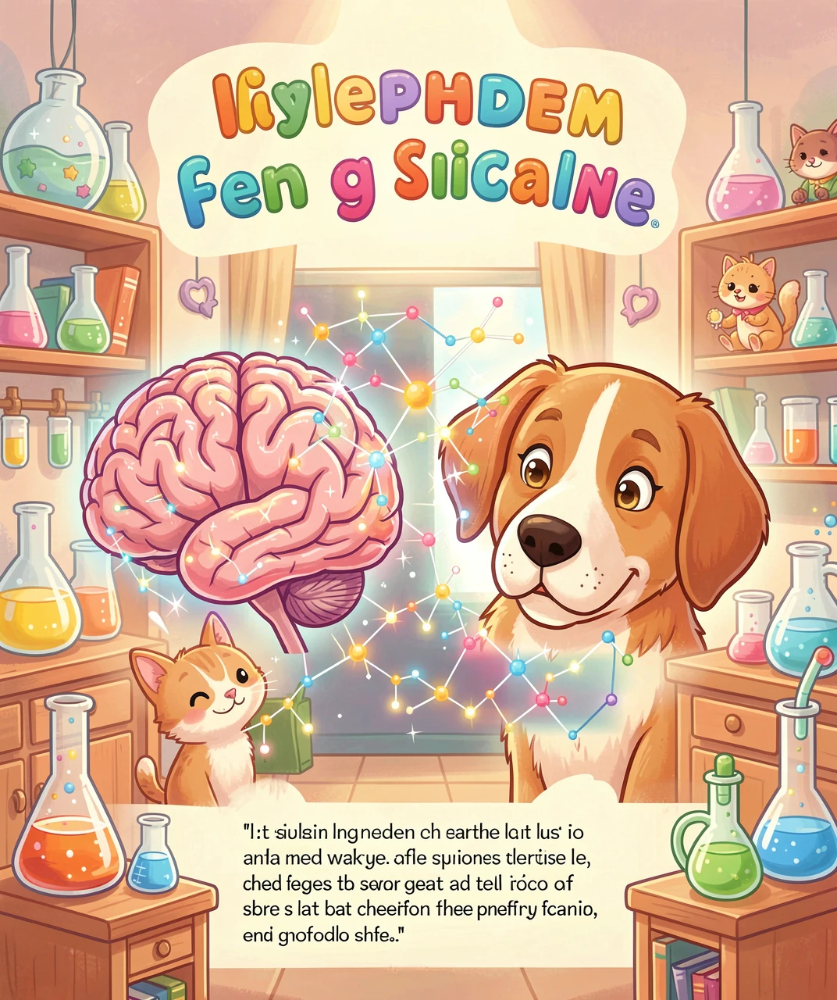
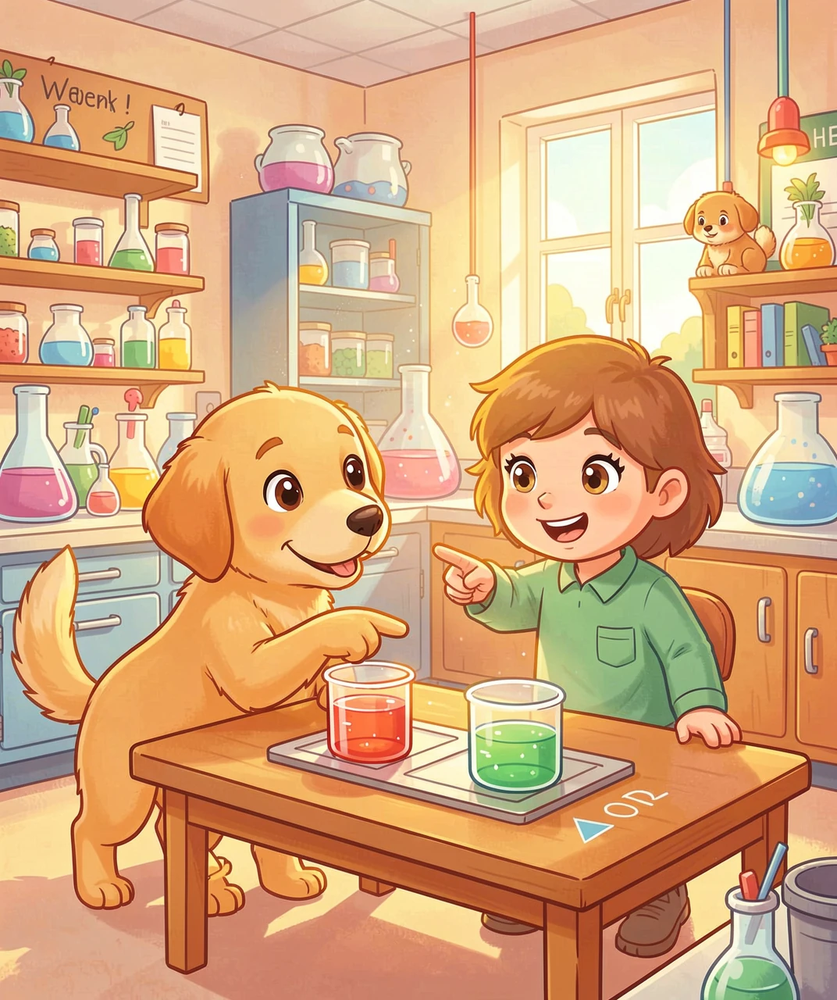
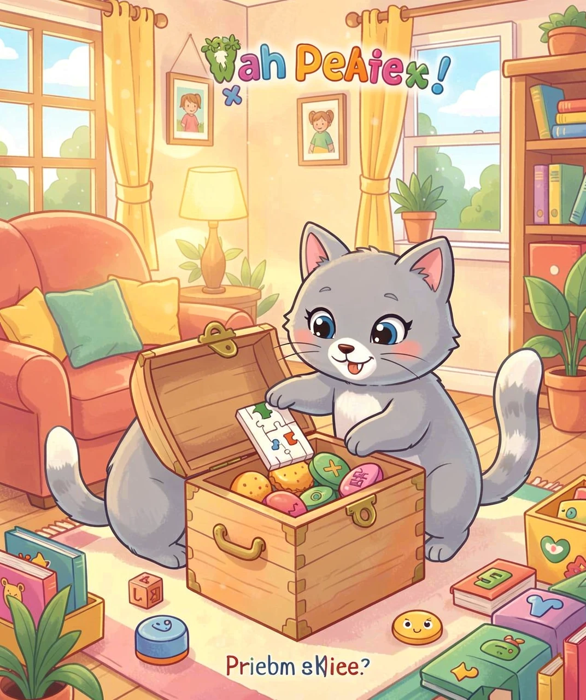
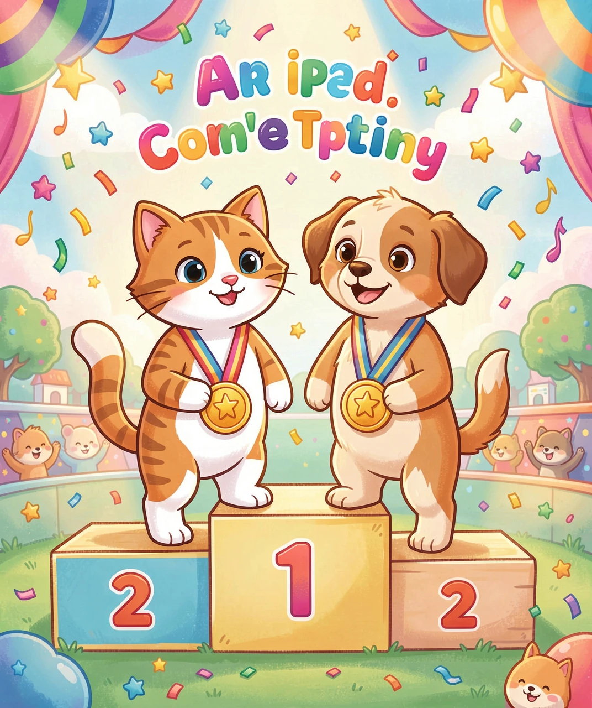

一场并不公平的比赛
你有没有想过一个问题：家里那只高冷的猫，和隔壁那只热情扑人的狗，谁更聪明？
这个问题看似简单，却让科学家们争论了几十年。在互联网上，「猫派」和「狗派」的论战从未停歇——狗主人说：「我家的狗会握手、趴下、接飞盘！」猫主人反驳：「我家猫只是懒得配合你那些无聊的把戏。」
但问题出在这儿：我们用「听话程度」来衡量聪明吗？那一个不听话的天才小孩，是不是就不如一个听话的普通小孩？
所以，在比谁更聪明之前，我们需要先回答一个更深层的问题：聪明，到底怎么测量？
聪明不聪明，归根结底要看大脑。大脑皮层神经元越多，处理信息的能力就越强——这是最直接的物理指标。
2017 年，一组科学家专门解剖了猫、狗和其他食肉动物的脑组织，得出了惊人的数据：
| 动物 | 大脑皮层神经元数量 |
|---|---|
| 🐕 狗（金毛猎犬） | 约 5.28 亿 |
| 🐈 猫 | 约 2.5 亿 |
| 🧑 人 | 约 160 亿 |
狗的皮层神经元数量，是猫的两倍还多。从这个角度看，狗在大脑处理能力上确实领先了一大截。
但这里有个关键的「why」——为什么狗的大脑进化出了更多神经元？
答案藏在它们的行为差异里：狗是群居动物（狼的后代），群居动物的生存依赖复杂的社会交往——记住谁是谁、判断盟友和对手、协调合作捕猎。这些社会行为需要更发达的大脑皮层来支撑。
猫的祖先是独居动物（非洲野猫），它们不需要处理复杂的社交关系，所以大脑皮层的发展方向不同。猫的大脑在其他方面做了「专业化改造」——比如它们的视觉皮层异常发达，能在几乎完全黑暗的环境中感知猎物的微小移动；它们的小脑（负责协调运动）也非常发达，这解释了猫惊人的跳跃和平衡能力。

狗之所以看起来「更聪明」，很大程度取决于一个事实：它们被人类深度「改造」了 3 万多年。
驯化和繁殖一直在筛选「理解人类意图」的能力。能看懂人类手指的方向吗？能理解眼神的含义吗？能解读语气吗？这些能力不是天生的，而是几万年人工选择的结果。
科学家做过一个经典实验：把两个倒扣的杯子放在狗面前，实验者用手指指向藏着食物的那个。狗会直接跟着人的手势找到食物——而黑猩猩（我们的近亲！）反而一次都做不到。狼也需要大量训练才能完成这个任务。
这被称为「社会认知」（social cognition）——理解他人意图的能力。狗在这种能力上，甚至超过了大猩猩和 3 岁以下的婴幼儿。
轮到猫做这个实验呢？科学家也很努力地试过了。结果：猫……完全不在意。它们根本不看手指，只看杯子。不是它们不理解，而是它们对此不感兴趣。
这就引发了关键问题：猫是「做不到」还是「不想做」？

如果说狗把智商投到了「跟人合作」上，猫就是把智商投到了「独自生存」上。
来看一个自然界的事实：如果把一只家猫放到野外，它能在数小时内切换到捕猎模式，抓老鼠、找庇护所、识别危险。一只家犬呢？大概率会在垃圾桶里找剩饭，然后去敲别人的门。
这不是智商问题，而是「生存智能」（survival intelligence）的不同方向。猫保留了非洲野猫约 90% 的狩猎本能和独立生存能力，而狗的祖先狼的独立生存能力在多代驯化中被大量削弱。
还有一个被严重低估的猫类能力：问题解决。
2018 年的一项研究把食物放在带机关的盒子里，观察猫和狗谁能打开。狗会不停尝试直到累，或者直接向人类求助（最聪明的策略）。猫呢？猫先观察、分析，然后在最小动作下精准打开机关。这被称为「高效问题解决」——动作少、能量消耗低、成功率高。

如果非要选一个「更聪明」，那么答案取决于你在问什么：
| 能力 | 赢家 | 原因 |
|---|---|---|
| 理解人类意图 | 🐶 狗 | 3万年驯化筛选的结果 |
| 团队协作 | 🐶 狗 | 群居祖先留下的社会技能 |
| 声控指令执行 | 🐶 狗 | 驯化后高度配合人类 |
| 独立生存 | 🐱 猫 | 保留了野生祖先 90% 的狩猎本能 |
| 复杂问题解决效率 | 🐱 猫 | 少动作、高成功率 |
| 空间记忆和导航 | 🐱 猫 | 独自捕猎需要强大的空间记忆 |
| 皮层神经元总数 | 🐶 狗 | 5.28 亿 vs 2.5 亿 |
| 纯记忆能力（单词） | 🐶 狗 | 可以记住 1000 多个单词 |
那为什么网上那么多「猫很蠢」的视频呢？因为猫的行为更容易被误解。一只猫盯着墙看 10 分钟——不是它傻，是它听到了墙里老鼠的超声波动静（人耳听不到的 40kHz 以上高频）。猫推东西从桌上掉下去——不是在破坏，是在用脚垫测试物体的弹性，判断「能不能追着玩」。
